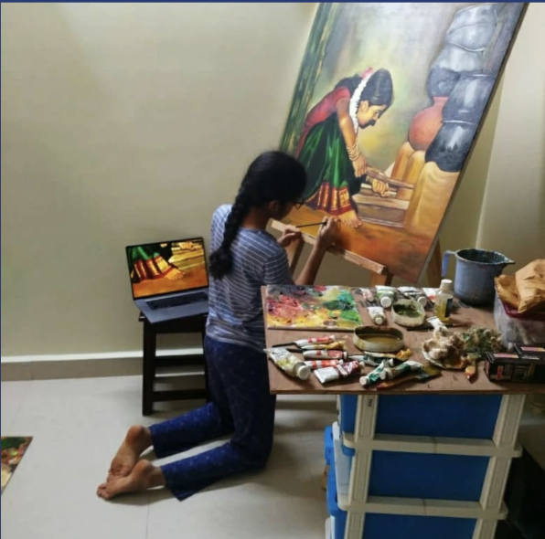

MY Journey
Picture this, you are in your first art class, fearing judgement for being unable to draw a perfect circle. That was me before my art teacher guided me to embrace criticism and discover my capabilities. Over the past decade, I've sketched numerous portraits and created about 45 paintings.
My journey in art has been more than just learning skills and techniques. It has taught me to see the world through a new lens, appreciate the beauty in the ordinary, and to translate emotions onto the canvas.
Most importantly, painting has shaped my character. It has instilled patience in everything I do and enhanced my observation skills, which in turn have improved my decision-making in daily life.
